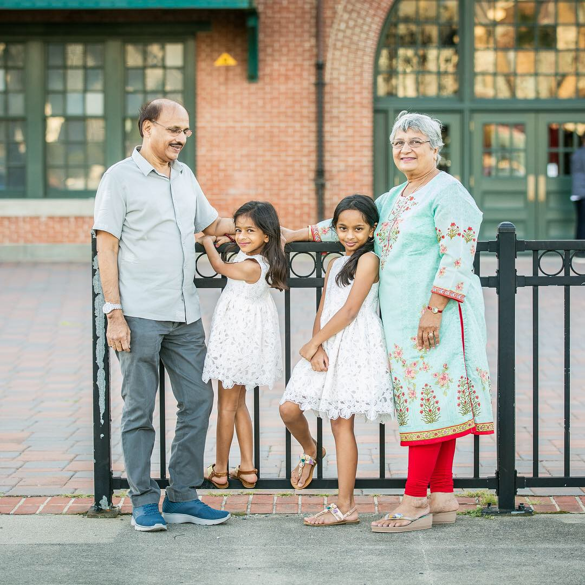

Our Story

"Caregivers cannot pour from an empty cup."
It all began from a single reason, to help our family. Around 10 years ago, our grandfather, Jayant Shah, was diagnosed with Alzheimer’s disease, and our grandmother became his primary caregiver. We watched helplessly as he slowly slid down the slippery slope of dementia, powerless to do anything to stop it.
We saw how Alzheimer’s left him confused, distressed, violent and eventually, sedentary. We saw our grandmother care for him, day after day, helping him to live through even the most challenging moments of his life. We saw her stress, her worries, and, most importantly, her extraordinary strength and determination.
Our grandmother, Hina, is superwoman, but even the strongest of heroes are put to the test during those harsh years. She showed us what an incredible caregiver can be like. Her story taught us a valuable lesson. Behind every patient lies a caregiver who tends to them and helps them through their darkest hours. It showed us the overlooked struggles of these people, who, unfortunately, are frequently forgotten by society.
Forgotten by society, yet incurring the immense burden of Alzheimer's. Caregivers are these hidden heroes, working around the clock, patiently for their loved ones, often without regard for their own health.
Our initiative was built on the realization that providing our grandmother simple moments to herself made an immense difference in not only how she cared for herself, but as well, how she cared for our grandfather. We strive to provide a community and give caregivers the much-needed respite and relaxation they deserve.